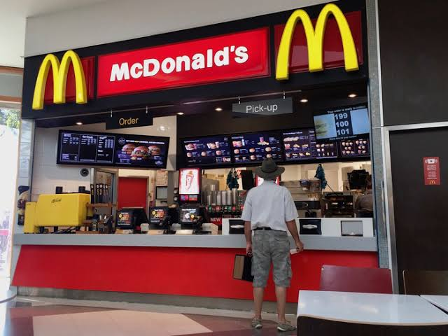

| Main Page | McDonalds Data | Canteen Data | Surveys and Interviews | Miscellaneous |
|
A Fast-Food and Canteen Analysis |  |
Have you ever wondered what the driving forces were behind why school children are eating Fast-Food and Canteen food? This analysis will be looking into the differant aspects that effect why school kids are consuming Fast-Food and Canteen food. |
|
|
We can see about three in four kids are consuming Fast-Food/Canteen Food more then once a week. |
|
| Comparing Kids who are consuming either Fast Food or canteen food to those who consume less then once per week |